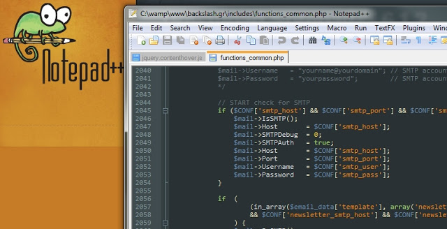

HTML Dersi, İLK Ders !
Title description, Dec 7, 2017
Bu dersimizde web teknolojilerinde kullanılan ve bir kısmını yakından bildiğiniz, bir kısmına aşina olduğunuz ve bir kısmını ise daha önce hiç duymadığınızı tahmin ettiğim kavramları öğrenmekle başlayacağız. Ama önce sizden iki isteğim olacak. Google Chrome ya da Apple Safari dışında bir tarayıcı kullanıyorsanız lütfen Google Chrome'u kullanmaya başlayın. Çünkü bu siteyi sadece Chrome için tasarladım. Neden Chrome ve Safari olduğunu önümüzdeki derslerde açıklayacağım. Ayrıca bu siteyi WordPress gibi bir blog sisteminde de hazırlayabilirdim. Benim için daha kolay olurdu; fakat istediğim çalışma alanını WordPress'te bulamadığım için bu sitenin tüm tasarımını kendim hazırladım. WordPress'te onlarca tema var; fakat size sağladığı esneklik payı da bir yerden sonra bitiyor.
İkinci olarak lütfen Notepad++ adlı programı indirin. Notepad++, Windows kullanıcılarının yakından bildiği Notepad metin editörünün geliştirilmiş bir versiyonudur. PHP, ASP, C#, HTML, XML, CSS, Python gibi birçok dilin kodlarını renkli bir şekilde gösterebilir ve kod yazımında kolaylık sağlar. Karmaşık gibi gözükmesine rağmen Notepad gibi oldukça basit bir programdır.
Bu ve bundan sonraki birçok dersimizde Visual Studio'ya geçmeden önce Notepad++'ı kullanacağız.
Şimdi yavaş yavaş kavramları incelemeye başlayalım:
www: World Wide Web (Dünya Çapında Ağ) kelimerinin kısaltılmış hâlidir. Alternatif adı W3'dir. Siteleri internete bağlamak için oluşturulmuş bir sistemdir. "Web'de yeni arama motorları" tabirindeki 'Web' kelimesi, WWW'ya ithaf etmektedir.
W3C: World Wide Web Consortium kelimelerinin kısaltmasıdır. Web'in standartlarını belirleyen ve geliştiren uluslararası bir topluluktur.
HTML: HyperText Markup Language (Zengin Metin İşaretleme Dili) kelimelerinin kısaltılmış halidir. Web sayfalarını görüntülemekte kullanılan ana işaretleme dilidir.
Basit bir HTML örneği:
<html>
<head>
<title>Başlık</title>
</head>
<body>
<p>Bu bir deneme yazısıdır.</p>
</body>
</html>

XML: Açılımı eXtensible Markup Language (Genişletilebilir İşaretleme Dili) şeklindedir. Hem insanların hem de makinelerin okuyabilmesi adına kodlama dosyaları için geliştirilen bir işaretleme dilidir. XML etiketleri HTML'in tersine kullanıcı tarafından özel olarak tanımlanabilir. İnternet sitelerinde site haritalarını oluşturmak için sıkça kullanılır.
Basit bir XML örneği:
<?xml version="1.0" encoding="UTF-8"?>
<cicekler>
<cesit>papatya</cesit>
<cesit>kardelen</cesit>
<cesit>karanfil</cesit>
</cicekler>
XHTML: eXtensible HTML (Genişletilebilir HTML) kelimelerinin kısaltılmışıdır. XML ve HTML'in kompozit hâlidir. HTML'deki fazla esnek yapı yüzünden oluşan hataları en aza indirmek için W3C tarafından geliştirilmiştir.
Domain: Alternatif ismi "alan adı"dır. Web sitelerinin internet üzerindeki adıdır. Örneğin; zinzinzibidi.com bir domain'dir. Temelinde bir IP adresi vardır. Kullanıcıların bu IP adresini yazıp sitelere erişmesi zor olduğu için böyle bir sistem geliştirilmiştir.
Hosting: Alan adlarının 7/24 Web'de erişilebilmesi için çeşitli firmalar tarafından sağlanan hizmet, hosting olarak adlandırılır. Hosting firmalarının sabah akşam hiç kapatılmadan çalışan server'ları, diğer bir ifade ile sunucuları vardır. Web sitesi sahibi oluşturduğu site dökümanlarını bu sunuculara gönderir ve yaptığı sitenin tüm dünya tarafından ziyaret edilmesine olanak tanır.
HTTP: HyperText Transfer Protocol (Zengin Metin Transfer Protokolü) kelimelerinin kısaltmasıdır. Site adlarında www'dan önce http:// şeklinde yazılır. Adından da anlaşılacağı üzere sitelerin ekranımızda görüntülenmesi için W3C tarafından oluşturulan bu protokol esas alınır. Bir web sitesi ile sunucu arasındaki veri transferini belli standartlara oturtmak için geliştirilmiştir. Bu transferin daha güvenli bir versiyonu olan HTTPS (HTTP Secure) bugün tüm ticarî alışveriş sitelerinde veri güvenliğini sağlamak amacıyla kullanılmaktadır.
FTP: Açılımı File Transfer Protocol (Dosya Transfer Protokolü) şeklindedir. Web sitesi sahibinin oluşturduğu site dosyalarını sunucuya gönderebilmesi amacıyla oluşturulmuş bir protokoldür. Web sitesi sahiplerinin sunuculara ulaşabilmesi oluşturulmuş FTP yazılımları geliştirilmiştir. SmartFTP, CuteFTP gibi birçok yazılım olsa da bunlar arasında en popüler FileZilla adlı yazılımdır. Kullanımı oldukça basittir.
HTTP, ziyaretçi ~ sunucu (visitor ~ server) arasındaki ilişkiyi belirlerken; FTP, site sahibi ~ sunucu (client ~ server) arasındaki ilişkiyi belirler.
SEO: Search Engine Optimization (Arama Motoru Optimizasyonu) kelimelerinin kısaltmasıdır. Sitelerin arama motorları tarafından index'lenebilmesi için HTML etiketleri içine yazılan bazı tanımlamalar dahilinde yapılır. SEO konusu başlı başına bir inceleme alanıdır ve ileride bu konuya değineceğiz.
HTML Etiketi: < ve > şeklinde gördüğünüz köşeli parantezler içine yazılır. Örneğin; <title> bir etikettir. </title> ifadesi etiketin kapatıldığını belirtir.
Temel HTML Etiketleri ve Kurallar
Bu dersimizde bir önceki dersimizde gördüğümüz basit HTML yapısını inceleyeceğiz ve HTML'deki önemli bazı kuralları öğreneceğiz.
İlk olarak basit bir HTML örneğini ele alalım:
<html>
<head>
<title>Başlık</title>
</head>
<body>
<p>Bu bir deneme yazısıdır.</p>
</body>
</html>
Bu örneği daha da basite indirgeyeyim:
<html>
<head></head>
<body></body>
</html>
Her şey daha açık bir hâl aldı. Yazdığım <html> etiketinin içinde head ve body adlı iki farklı element daha olduğunu göreceksiniz. Ayrıca klavyemizdeki Caps Lock tuşunun bir üstündeki Tab tuşuna basarak head ve body'nin html etiketinin içinde yazıldığına dikkatinizi çekmek isterim. Açıkçası bunu yapmayabilirdim; ama yapmamdaki amacım HTML'deki hiyerarşik yapıyı sizlere öğretmek.
Tüm HTML etiketleri <örnek> şeklinde açılır ve köşeli parantezlerin içine yazdığınız "etiket adı"nın başına / (slash) işareti yazılarak kapatılır. Böylece "örnek" etiketini kapalı hâli </örnek> şeklindedir. <örnek>'i açma etiketi olarak, </örnek> şeklinde yazılanı ise kapatma etiketi olarak adlandırabiliriz. Ayrıca bir kısım HTML üstadları 'etiket' yerine 'element' terimini kullanmayı tercih etmektedir. Bu da aklınızda olsun.
HTML etiketinin açılım ve kapatım şekli bazı istisnalar dışında daima böyledir. Yazmak istediğimiz içerik daima açılım ve kapatım etiketlerinin içindeki boş alana yazılır.
Şimdi tekrar daha da basite indirgenmiş örneğimize dönelim:
html açma etiketi ile kapatma etiketi arasında head ve body etiketlerinin olduğunu görüyorsunuz. head ve body'nin ise aynı satır düzeyinde yer aldıklarını... head İngilizce'de baş, body ise gövde anlamına gelmektedir. Bu da bize HTML'in bir iskelet yapısı olduğunu gösterir. html etiketini bir insan vücudu; body ve head'in ise bu vücudun başı ve gövdesi olduğunu düşünebilirsiniz.
<head> etiketi daima <html> etiketinin içinde yer alır ve <head>'in içerisine yazılan <title> dışındaki tüm içerik kullanıcı tarafından görülmez. <body>'in içine yazılan içerik neyse tarayıcı ekranında o görülecektir.
<title> sayfa başlığı anlamındadır. Örneğin şu an tarayıcınızın sekmesindeki başlığın "Temel HTML etiketleri ve Kurallar" şeklinde başlayan bir yazı oldunu göreceksiniz:
Bu da aslında pencere içeriğinde görülmez; fakat bir istisna olarak kabul edilebilir.
HTML5'teki hiyararşik yapıyı tam olarak anlamadıysanız aşağıdaki hatalı HTML kodlarını inceleyiniz:
<head>
<title>Site Başlığı</title>
</head>
<html>
<body>Site İçeriği</body>
</html>
<html>
<head>
<title>Site Başlığı</title>
</head>
<body>Site içeriği
</html>
</body>
İlk örnekteki hata head elementinin html etiketinin dışına yazılmış olması. Unutmayın ki HTML5'teki tüm etiketler daima <html> etiketinin içine yazılır.
İkinci örnekteki hata biraz daha komplike. body'nin kapatma etiketi html'in dışına yazılmış ve bu da yanlış kodlama örneklerinden biri. Yine unutmayın ki iki HTML5 etiketi asla ve asla birbirleri ile kesişmezler.
Yani <a etiketi><b etiketi></a etiketi></b etiketi> şeklinde bir yazım yoktur.
Doğrusu <a etiketi><b etiketi></b etiketi></a etiketi> şeklindedir.
Sayfanın başındaki ilk örneğe dönelim.
adlı bir etiket göreceksiniz. Bu etiket HTML5'te içerik eklenirken en sık kullanılan elementlerden biridir. Paragraf kelimesinin kısaltmasıdır.
Şimdi ilk web sayfanızı nasıl yapacağınızı anlatacağım.
Notepad++'ı açın. Yeni bir sayfa oluşturun. Sayfa tamamen boş olsun. İçine aşağıdaki kodları yazın. Ama lütfen kopyala / yapıştır yapmayın. Tek tek yazın.
<html>
<head>
<title>[Site başlığım buraya]</title>
</head>
<body>
<p>[İçerik buraya]</p>
</body>
</html>
Hiyararşik yazmaya özen gösterin. Örneğin; <html> yazdıktan sonra enter'a basın. Daha sonra tab tuşu ile boşluk bırakın ve kodun kalan kısmını yazın. [Site başlığım buraya] kısmına kendi adınızı ya da rumuzunuzu yazabilirsiniz. [İçerik buraya] kısmına ise yazmak istediklerinizi yazın.
Her şey bittikten sonra Notepad++'ın menüsünden Dosya > Farklı Kaydet...'e tıklayınız. File name kısmına istediğiniz dosya adını yazınız ve Save as type kısmındaki açılır menüden Hyper Text Markup Language file'ı seçiniz.
Eğer son yazdıklarımı yapamadıysanız üzülmeyin. Dosyanızı txt dosyası şeklinde masaüstüne kaydediniz ve uzantısındaki .txt'yi siliniz. Yerine .html yazınız.
Şimdi kaydettiğiniz dosyaya dönünüz ve Birlikte aç komutundan Google Chrome'u seçiniz. Daha sonra dosyanızı açınız.
Tebrikler! İlk web sayfanızı oluşturdunuz. Her şey bu kadar kolay.

Muhammed Aktan
Website designer